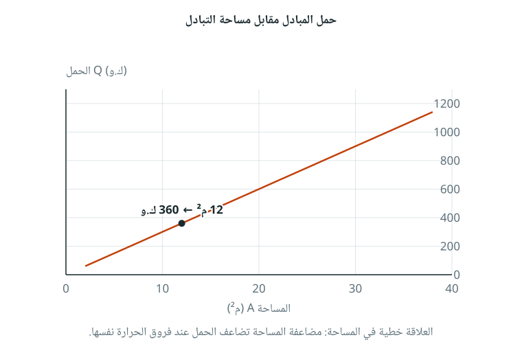

حمل المبادل الحراري: من فروق الحرارة إلى الكيلوواط
غيّر الحرات الأربع والمساحة ومعامل U، وتابع الفرق اللوغاريتمي والحمل على المقياس. محاكاة تعليمية لا قياس فيزيائي حقيقي.
المقياس يبدأ عند 140/80/25/60 °م و12 م² و450 واط/م²·ك. محاكاة تعليمية لا قياس فيزيائي حقيقي: الأرقام تُحسب من النموذج لحظيًا، ولا تُقاس بأدوات منزلية.
افتراضات النموذج والمصدر
Q = U · A · (ΔT₁ − ΔT₂)/ln(ΔT₁/ΔT₂)
مبادل بسيط التدفق المتعاكس بلا تغيّر طوري
U ثابت لا يتغيّر بتغيّر الحمل
لا فقد حراري إلى المحيط
الحرات الأربع مقيسة عند المخارج والدخول لا داخل المبادل
Arithmetic and Logarithmic Mean Temperature Difference — The Engineering ToolBox
Heat Exchangers — LMTD and correction factor F — The Engineering ToolBox
أربع درجات حرارة تحكم المبادل: دخول وخروج الساخن، ودخول وخروج البارد. الفرق عند كل طرف ليس متساويًا، والحرارة المنقولة تتبع فرقًا واحدًا ممثِّلًا لهما: المتوسط اللوغاريتمي. اضرب هذا المتوسط في معامل الانتقال الكلي وفي المساحة، تحصل على الحمل بالواط.
في الحالة الافتراضية (140 و80 للساخن، 25 و60 للبارد، 12 م²، و450 واط/م²·ك) يكون الطرفان 80 و55 كلفن، ومتوسطهما اللوغاريتمي 66.7 لا 67.5 — فرق صغير هنا لأنهما متقاربان. قلّب الحالة حتى يتباعد الطرفان وترَ الفرق يكبر.
لاحظ ما لا تقوله المعادلة: لا تعرف شيئًا عن نوع المائع ولا عن الاتساخ ولا عن مسار التدفق. كل ذلك مخبّأ داخل U، وهو أول ما يتغيّر في المبادل الحقيقي مع الزمن.
كيف تعمل الظاهرة؟
الحرارة تُنقل شريحةً شريحة على طول المبادل بمقدار يتناسب مع الفرق اللحظي بين الساخن والبارد عند تلك الشريحة، فيأخذ الفرق صورة أسّية في المساحة، ومتوسط الدالة الأسّية هو اللوغاريتمي لا الحسابي. وكل شريحة تُغيّر حرارة الطرفين معًا، فالنظام مقترن لا مستقل.
العلاقة بالأرقام
المعادلة: Q = U · A · (ΔT₁ − ΔT₂)/ln(ΔT₁/ΔT₂). عند حرارة دخول الساخن 140.00 °م، حرارة خروج الساخن 80.00 °م، حرارة دخول البارد 25.00 °م، حرارة خروج البارد 60.00 °م، مساحة التبادل 12.00 م²، معامل الانتقال الكلي U 450.00 واط/م²·ك، يعطي الحساب: فرق الطرف الأول = 80.0 كلفن؛ فرق الطرف الثاني = 55.0 كلفن؛ المتوسط اللوغاريتمي = 66.72 كلفن؛ الحمل الحراري = 360.29 ك.و؛ الحمل بوحدة الواط = 360,295 واط. حالة «مساحة أصغر» (حرارة دخول الساخن 140.00 °م، حرارة خروج الساخن 80.00 °م، حرارة دخول البارد 25.00 °م، حرارة خروج البارد 60.00 °م، مساحة التبادل 6.00 م²، معامل الانتقال الكلي U 450.00 واط/م²·ك): فرق الطرف الأول = 80.0 كلفن؛ فرق الطرف الثاني = 55.0 كلفن؛ المتوسط اللوغاريتمي = 66.72 كلفن؛ الحمل الحراري = 180.15 ك.و؛ الحمل بوحدة الواط = 180,147 واط. حالة «مساحة مضاعفة» (حرارة دخول الساخن 140.00 °م، حرارة خروج الساخن 80.00 °م، حرارة دخول البارد 25.00 °م، حرارة خروج البارد 60.00 °م، مساحة التبادل 12.00 م²، معامل الانتقال الكلي U 450.00 واط/م²·ك): فرق الطرف الأول = 80.0 كلفن؛ فرق الطرف الثاني = 55.0 كلفن؛ المتوسط اللوغاريتمي = 66.72 كلفن؛ الحمل الحراري = 360.29 ك.و؛ الحمل بوحدة الواط = 360,295 واط. هذه أمثلة مولدة من دالة الحساب نفسها؛ وليست قياسات فعلية أو مواصفات لجهاز تجاري.
مفاهيم متقاربة
يُخلط بين المتوسط الحسابي واللوغاريتمي: الحسابي يعطي 67.5 كلفن هنا أي 1.2% زيادة، ويتضاعف خطؤه كلما تباعد الطرفان (عند 80 و20 يصير الخطأ 15.5%). ويُخلط أيضًا بين U الكلي ومعامل الحمل h على جانب واحد: U يجمعهما مع مقاومة الجدار ومعامل الاتساخ في سلسلة مقاومة واحدة.
حدود التطبيق
القانون لمبادل بسيط التدفق المتعاكس أو المتوازي بلا تغيّر طوري وبمعامل U ثابت لا يتبع الحمل. للمبادلات متعددة المسارات يُضرب في معامل تصحيح F أصغر من واحد، وللمكثفات والمبخّرات لا يصلح لأن الفرق يصير ثابتًا في معظم المساحة فيُستبدل بفرق الطرف.

| الكمية | القيمة | المصدر |
|---|---|---|
| فرق الطرف الأول — الحالة الافتراضية | 80.0 كلفن | [1] |
| فرق الطرف الثاني — الحالة الافتراضية | 55.0 كلفن | [1] |
| المتوسط اللوغاريتمي — الحالة الافتراضية | 66.72 كلفن | [1] |
| الحمل الحراري — الحالة الافتراضية | 360.29 ك.و | [1] |
| الحمل بوحدة الواط — الحالة الافتراضية | 360,295 واط | [1] |
المصادر
- 1 Arithmetic and Logarithmic Mean Temperature Difference — The Engineering ToolBox. www.engineeringtoolbox.com/arithmetic-logarithmic-mean-temperature-d_436.html · اطُّلع عليه 2026-11-19
- 2 Heat Exchangers — LMTD and correction factor F — The Engineering ToolBox. www.engineeringtoolbox.com/heat-exchangers-d_433.html · اطُّلع عليه 2026-11-19
راجعه: عبدالله الهويدي — مراجعة في تطبيق انفراد · 2026-11-19 · آخر تحديث 2026-11-20
رجوع إلى المعمل